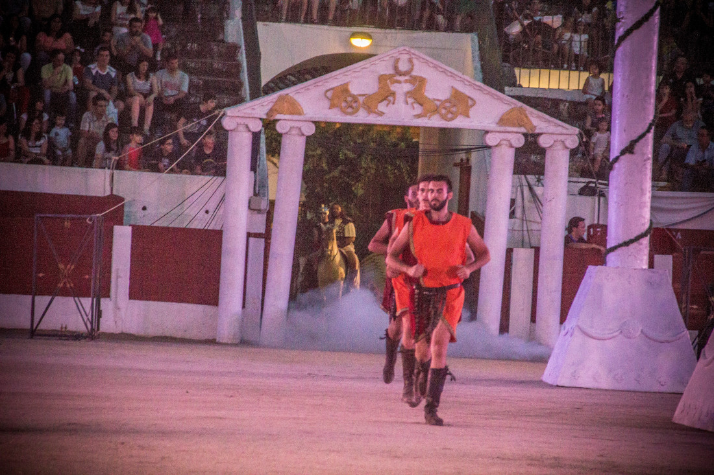

¿Qué es circus maximus?
Circus Maximus es una perfecta mezcla de acción de los mejores especialistas hístoricos, interactuando con diversas artes escénicas y espectaculo ecueste de alto nivel, todo ello conforma una aventura en directo donde el mismo publico es parte activa.
Los componentes han sido entrenados por una de las escuelas de especialistas más carismáticas de Europa. Adiestrados tanto en manejo de armas de toda época como en interactuación con el público asistente. Las bailarinas que intervienen han recorrido toda la península actuando en los eventos históricos más notables y adaptando sus coreografías para crear emoción en cada uno de ellos. Una particularidad de nuestros caballos es que muchos de ellos han sido rescatados de situaciones de abandono y recuperados tanto físicamente como psicológicamente. El director de escena Luis Manuel Leal tiene una experiencia de 25 años en creación de espectáculos temáticos que han cautivado a decenas de miles de asistentes.